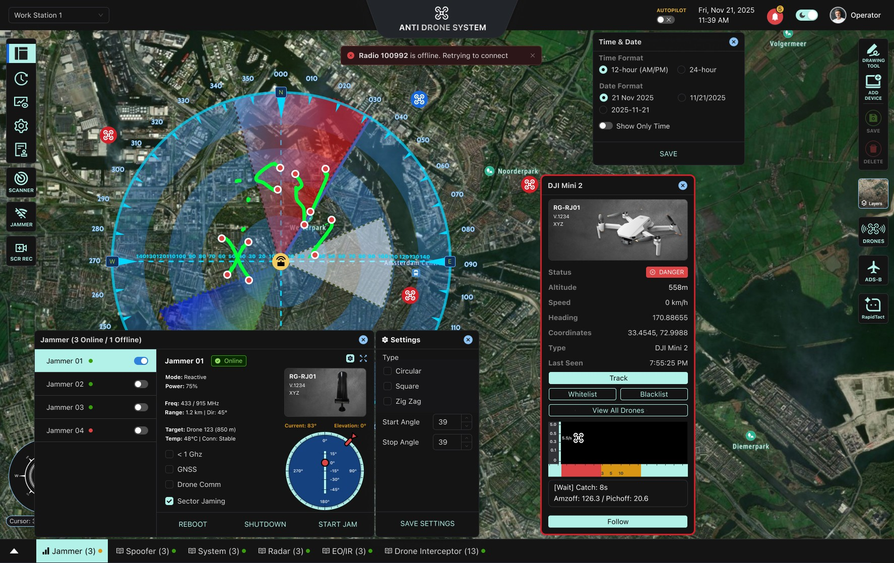

AEGIS
Real-time counter-drone command interface
Designed the complete C2 interface for a counter-drone platform deployed across military installations, airports, and critical infrastructure. The product keeps the map at the center, while hardware control, threat tracking, and countermeasure activation stay accessible in seconds.
On this page: Overview • Lifecycle • Brief • Command Hierarchy • Response Timelines • Threat Framework • IA • Decision Ledger • After-Action Review • Outcomes

A platform designed for seconds, not minutes
When a hostile UAV appears in the airspace, the operator has seconds to classify the threat, select a countermeasure, and activate it. The design needed to keep the map as the permanent primary interface while making every hardware control and threat action immediately accessible.
The operational lifecycle that shaped every decision
Mission parameters
Three roles across the command structure
How each role moves through the system
Five design problems rooted in operational risk
Five principles that governed every screen decision
Single unified counter-drone operations platform
The AEGIS system organizes detection, threat intelligence, and operational control into distinct layers. Operators interact with the live map as the primary workspace while threat data flows from detection sensors through scoring to countermeasures, with full incident tracking and administrative oversight.
Ant Design dark theme extended for operational context
Component library
Buttons, forms, modals, and status indicators tuned for C2 interaction.
Coverage visual language
Radar, jammer, and detection zones use calibrated opacity and color hierarchy.
Threat iconography
Consistent classification colors for drones, aircraft, and alerts across every panel.
Five architectural choices and their operational reasoning
Operational learnings and next steps for AEGIS
Designed for live operations
Built a map-first control interface that keeps threat context visible while operators act.
Hardware-aware delivery
Aligned UI design with real device and workflow constraints to reduce implementation risk.
Internal reference pattern
Established a visual and interaction model for future counter-drone deployments.
Stakeholder confidence
Refined decisions through direct operational review rather than a separate discovery phase.